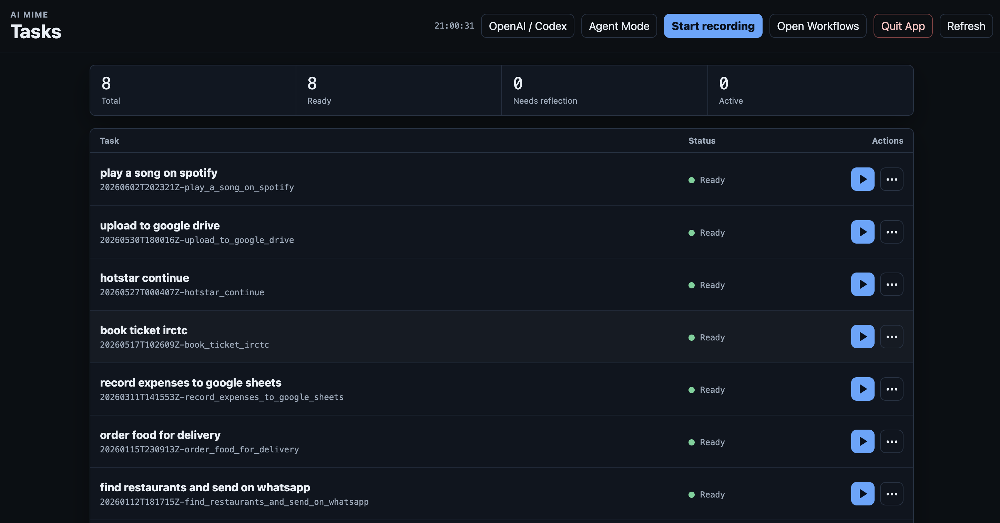
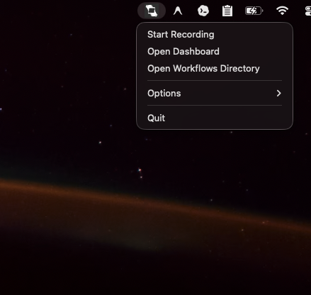
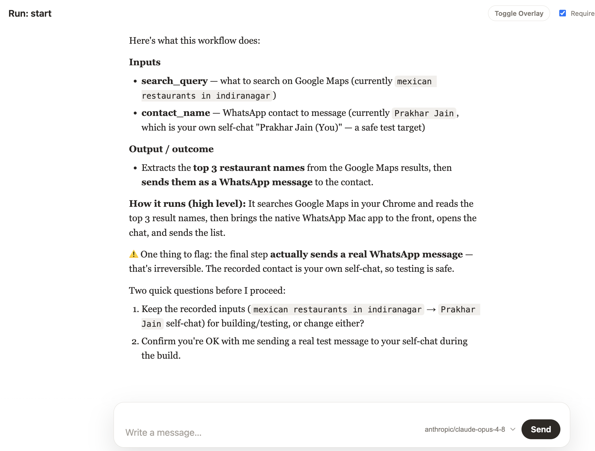
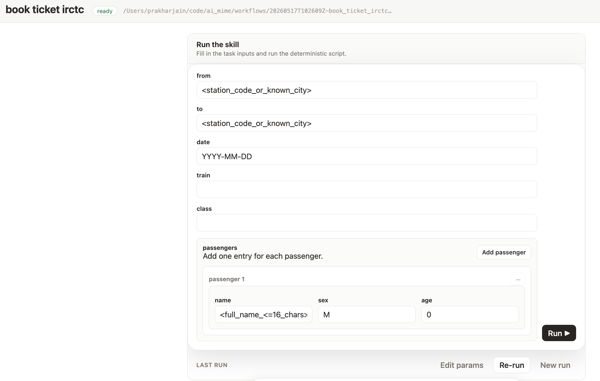
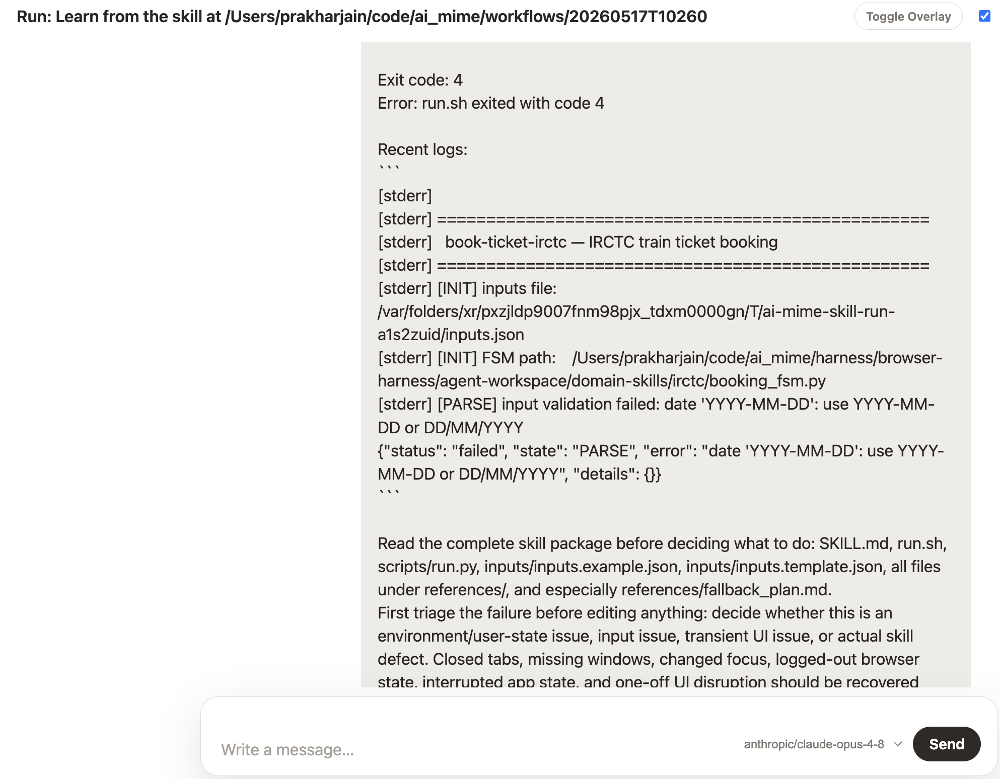

Demonstration-to-skill automation for macOS
AI Mime turns one recorded workflow into a runnable skill.
Record a task once. AI Mime reflects the trace into semantic workflow artifacts, optimizes the execution path, and packages it as readable code with inputs, fallback context, and repair hooks.



See it in action
Record once. Build the skill. Run it forever.


How it works
Record → Reflect → Optimize → Build Skill → Run / Heal
Record
Capture screenshots, clicks, keystrokes, extracts, and user notes from the demonstrated workflow.
Reflect
Convert the raw trace into coordinate-free schema artifacts with task parameters and subtasks.
Optimize
Choose the most reliable executor: deterministic script first, browser harness second, native UI agent last.
Build Skill
Package run scripts, input templates, and fallback notes into a portable skill directory.
Run / Heal
Run with new inputs. If execution fails, an agent can inspect logs, complete the run, and patch the skill.
What is novel
The recording is evidence, not the automation.
Semantic trace compilation
A UI trace becomes task intent, targets, parameters, subtasks, and success criteria.
Intent optimization
Manual UI paths can be replaced with APIs, CLI calls, file parsing, browser CDP, or AppleScript.
Portable executable skills
Finished automations are readable packages that Claude Code or Codex can call directly.
Agentic healing
Broken runs can be triaged, completed, and repaired instead of being rerun from scratch.
Current app surfaces
From task library to replay and recovery.


Developer inspection
Every stage leaves files you can read.
recordings/<id>/manifest.jsonl
Raw event stream: screenshots, actions, extracts, and notes.
workflows/<id>/schema.json
Semantic workflow produced from the recording.
workflows/<id>/optimized_plan.json
Executor plan for script, browser harness, and UI-agent steps.
workflows/<id>/skills/<slug>/
Portable skill package with runnable code and fallback references.
workflows/<id>/runs/
Run logs, copied assets, outputs, and replay summaries.
Open source automation you can inspect